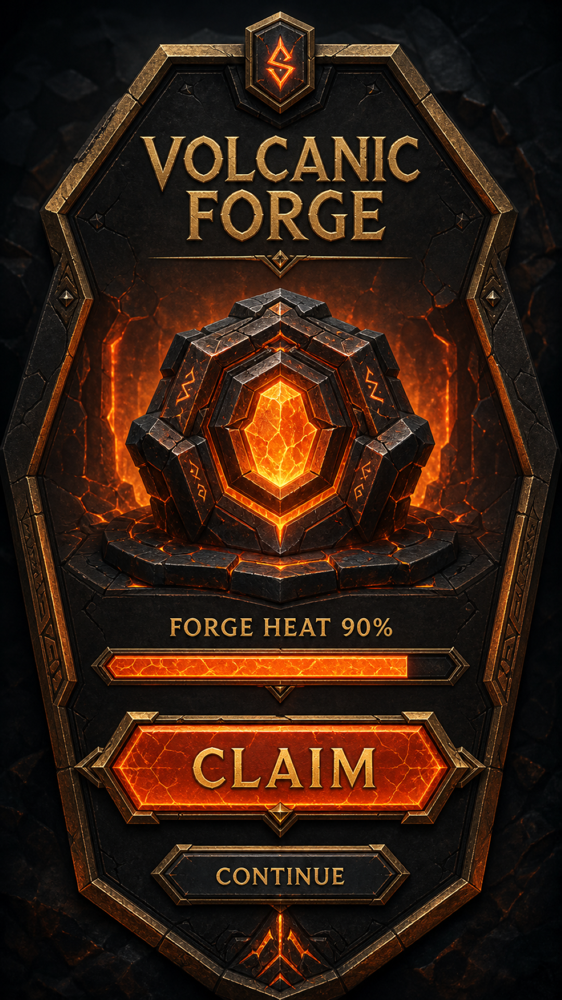

Review-only reference

See the adjacent provenance receipt.
Renderer-derived target phone

Inspect shared-system implementation independently.
The generated reference is comparison evidence only; it is never a production source.

See the adjacent provenance receipt.
Inspect shared-system implementation independently.